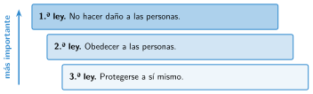
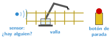

Las tres leyes de la robótica de Asimov
🤔 Pienso5 min
Qué hago aquí: Piensa un momento y contesta con lo que ya sabes. No pasa nada si no lo sabes: es para empezar.
Le pides a tu robot que te traiga una pizza cruzando la calle en rojo. ¿Debería obedecer? Escribe sí o no y por qué.
📖 Leo y aprendo15 min
Qué hago aquí: Lee despacio, mira los dibujos y los ejemplos, y quédate con la idea clave del final.
Isaac Asimov fue un escritor de ciencia ficción. En 1942 inventó tres normas para los robots de sus cuentos: las tres leyes de la robótica.

Las leyes de Asimov son de un libro. Los robots reales no las llevan. Para que sean seguros, las personas les ponen vallas, botones de parada y sensores que los paran si alguien se acerca.

✏️ Hago25 min
Qué hago aquí: Haz las actividades en orden. Empieza siempre por las básicas.
Ordena las leyes de más a menos importante: obedecer, protegerse, no hacer daño.
Escribe dos cosas que hacen que un robot real sea seguro.
Vuelve a Pienso. ¿Qué haría un robot de Asimov con la pizza? ¿Qué ley usa?
En parejas. Un robot de rescate tiene la orden de no entrar en un edificio en llamas para no romperse. Pero dentro hay una persona. ¿Qué hace? ¿Qué ley decide?
✏️ Puedes responder escribiendo, con un dibujo o un esquema, o contándolo en voz alta.
🚀 Amplío (si quieres saber más)
Qué hago aquí: ¿Has terminado? Lee la curiosidad o elige el reto. Es voluntario.
Inventa una cuarta ley para los robots de hoy. Por ejemplo, sobre los datos personales. Explica por qué hace falta.
✅ Compruebo5 min
Qué hago aquí: Contesta sin mirar la ficha y marca cómo lo llevas.